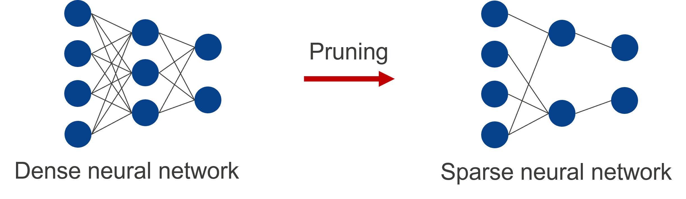
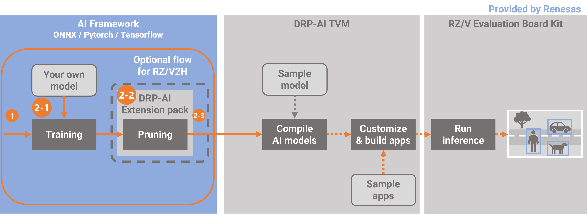

The following is an example of how to implement RZ/V2H implementation, but it can be the same way in RZ/V2N.
Nodes are interconnected in a neural network as shown in the figure below. Methods of reducing the number of parameters by removing weights between nodes or removing nodes are referred to as “pruning”. A neural network to which pruning has not been applied is generally referred to as a dense neural network. Applying pruning to a neural network leads to a slight deterioration in the accuracy of the model but can reduce the power required by hardware and accelerate the inference process.

DRP-AI for RZ/V2H supports the feature of efficiently calculating the pruned AI model. Therefore, power efficiency is improved by using the pruned AI model.
This document explains how to prune your own model by using DRP-AI Extension package, which provides a pruning function optimized for the DRP-AI.
In this case, yolox-s provided by Megvii-BaseDetection framework is used as an example to explain it.

This document follows the following steps.
In 2-1. this step performs initial training. Initial training involves training of the AI model without pruning. Use the code for use in initial training and a dataset you have prepared.
If you have pretarained model, you can skip this chapter.
In 2-2, this step performs pruning your own model. This step includes retraining of the AI model by adding
the DRP-AI Extension Pack to the code for use in initial training.
In 2-3, this step checks the accuracy of the pruned model after one round of pruning then retraining has been completed.
Setup the DRP-AI Extension Pack
1-1. Download the DRP-AI Extension Pack
1-2. Setup the DRP-AI Extension Pack with Docker
1-3. Setup the training environment for your own model
Prune your model
2-1. Prepare the datasets and pre-trained model for your own model
2-2. Prune the model (YOLOX-s)
2-3. Test the pruned model
Download DRP-AI Extension Pack from below.
https://www.renesas.com/us/en/software-tool/drp-ai-extension-pack-pruning-tool
Preparing workspace
$ mkdir prune-work
$ cd prune-work
$ git clone https://github.com/renesas-rz/rzv_drp-ai_tvm.git
$ cd rzv_drp-ai_tvm/pruning/setup/docker
$ cp $HOME/Downloads/drpai-extension-pack_ver*.tar.gz ./Comfirming necessary files.
$ ls
drpai-extension-pack_ver1.0.0.tar.gz torch.DockerfileBuild docker image.
$ sudo docker build -t drpai_ext_pt_img -f torch.Dockerfile .Comfirming a docker image is built properly
$ sudo docker images | grep drpai_ext_pt_img
drpai_ext_pt_img latest XXXXXXXXXXXXX X seconds ago 12.4GBPlease change to the working directory prepared for YOLOX and then execute the following command to run a docker image.
$ cd $HOME/prune-work/rzv_drp-ai_tvm/pruning/how-to/megvii-basedetection_yolox
$ sudo docker run -it --rm --shm-size=32gb --gpus all -v $(pwd):/workspace -w /workspace drpai_ext_pt_imgThe local $(pwd) is mounted to /workspace on the Docker container by the above command option.
For example, you can use this directory to copy files created on the Docker container to your local environment.
In this chapter, install python libraries needed to run and create codes for pruning then retraing.
root@docker_hostname:# ./setup.sh
root@docker_hostname:# ls
YOLOX/ patch/ setup.sh README.mdMove to the working directory with the following command.
root@docker_hostname:# cd YOLOX
root@docker_hostname:# ls
torch2onnx.py yolox_voc_s_pruning_conf.py onnx_voc_evaluator.py eval_with_pruned_model.py yolox/In this tutorial use the pascal VOC dataset.
To find more details please visit http://host.robots.ox.ac.uk/pascal/VOC/.
Please download the dataset present at the following links.
root@docker_hostname:# mkdir -p datasets
root@docker_hostname:# tar xvf VOCtrainval_06-Nov-2007.tar -C datasets
root@docker_hostname:# tar xvf VOCtest_06-Nov-2007.tar -C datasets
root@docker_hostname:# tar xvf VOCtrainval_11-May-2012.tar -C datasets
root@docker_hostname:# ls datasets/VOCdevkit
VOC2012/ VOC2007/To create the initial trained model, this chapter uses the COCO pretrained-model provided by Megvii-BaseDetection for initializing the model. Initial training can be performed by executing the following command
root@docker_hostname:# wget https://github.com/Megvii-BaseDetection/YOLOX/releases/download/0.1.1rc0/yolox_s.pth
root@docker_hostname:# python3 -m yolox.tools.train -f exps/example/yolox_voc/yolox_voc_s.py -c yolox_s.pth -d 1 -b 64 --fp16 -oAfter training is finished, the trained weight is contained in the YOLOX_outputs/yolox_voc_s folder.
And the trained weight is named best_ckpt.pth.
root@docker_hostname:# ls YOLOX_outputs/yolox_voc_s
... best_ckpt.pth train_log.txt tensorboard/This step performs pruning your own model. This step includes retraining of the AI model by adding the DRP-AI Extension Pack to the code for use in initial training.
In Steps 1-3, the code with the DRP-AI Extension Pack has already been output.
Therefore, read on here if you would like to do pruning then retraining now.
If you would like to know how the DRP-AI Extension Pack is added, please continue reading.
The following file is the code with the DRP-AI Extension Pack. In the case of YOLOX, this file will be used to do the pruning then retraining.
yolox_voc_s_pruning_conf.py
And this step explains how the DRP-AI Extension Pack is added using this file as an example.
In YOLOX, initial training is executed using a class called Trainer.
The Trainer class provides a number of easy-to-use functions, such as the before_train() function to be called before training and the before_epoch() function to be called before the start of one epoch.
class Trainer:
def train(self): # function to execute training
def before_train(self): # function called before training
def before_ecoch(self): # function called before the start of one epoch
.... #Other functions existExtend (inherit) the functionality of this Trainer and add the DRP-AI Extension Pack. The DRP-AI Extension Pack is added to the following functions in the Trainer class.
Specifically, the DRP-AI Extension Pack is added to the YOLOX code in the following four steps.
(1). Importing the DRP-AI Extension Pack module
(2). Loading the trained model (edit resume_train() fucntion)
(3). Preparing for pruning the model (edit before_train() function)
(4). Updating the pruning parameters (edit before_iter() function)
Import the DRP-AI Extension Pack module to the code written with PyTorch for use in initial training.
Specifically, the DRP-AI Extension Pack is added on lines 62-64 on the right side.
Below is the difference between yolox/core/trainer.py and yolox_voc_s_pruning_conf.py that is used to train. The red parts are the deleted parts and the green parts are the added parts.
The deleted sections are used in yolox/core/trainer.py but not in yolox_voc_s_pruning_conf.py, so they have been removed.
Load the trained model to initialize the model weights.
Lines 190-193 on the right side of the figure below are the relevant sections.
Here, the resume_train() function in the Trainer class is modified to load the initial trained model.
The resume_train() function is called when loading learned weights.
In order to be able to load pruning then retrained models, the load_pruned_state_dict() function is used in lines 194-196 on the right side.
Execute the pruning API function to prepare for pruning the model.
After the pruning API function has been executed, confirming that pruning has been performed with the get_model_info() function is recommended.
Lines 136-145 on the right side of the figure below are the relevant sections.
The before_train() function in the Trainer class is modified to call the pruning API.
The before_train() function is called once before training.
In addition, the following modifications are made as unique changes to the code in this tutorial. Normally, you do not need to make these changes. (These are proprietary modifications that are required by YOLOX.)
※EMA: Abbreviation of Exponential Moving Average.
Update the pruning parameters during training. The API function (pruner.update()) must be called at the start of each iteration.
Lines 176 on the right side of the figure below are the relevant sections.
Normally, pruner.update() should be called at the beginning of each iteration.
For YOLOX, modify before_iter() function in the Trainer class and call it at the beginning of each iteration.
Specifically, pruning parameters is updated in the before_iter() function in the Trainer class.
The before_iter() function is called before one iteration of training. Updating the pruning parameters here allows the pruning parameters to be updated at the start of each iteration.
Pruning then retraining can be performed by executing the following command.
For more information about this options, please click here.
This chapter uses the trained model on VOC which is created above for initializing the model.
root@docker_hostname:# PRUNING_RATE=0.7 python3 -m yolox.tools.train -f yolox_voc_s_pruning_conf.py -c YOLOX_outputs/yolox_voc_s/best_ckpt.pth -d 1 -b 32 --fp16 -oAfter retraining, the YOLOX_outputs/yolox_voc_s_pruning_conf folder can be confirmed.
And the trained weight is named best_ckpt.pth.
root@docker_hostname:# ls YOLOX_outputs/yolox_voc_s_pruning_conf
... best_ckpt.pth train_log.txt tensorboard/Finally, check the accuracy of the AI model after one round of pruning then retraining has been completed.
In this chapter, the accuracy of the pruned model is measured to ensure that its accuracy is maintained after pruning then retraining.
Convert pytorch format model to onnx format model first.
For more information about this options, please click here.
root@docker_hostname:# python3 torch2onnx.py -f yolox_voc_s_pruning_conf.py -c YOLOX_outputs/yolox_voc_s_pruning_conf/best_ckpt.pth --output-name pruned_model.onnx --is_pruned_weightTest the pruned model with onnx format.
For more information about this options, please click here.
root@docker_hostname:# python3 eval_with_pruned_model.py -f yolox_voc_s_pruning_conf.py -c pruned_model.onnx -b 1 -d 1 --conf 0.001The following log can be confirmed. It shows the accuracy of the trained model.
...
map_5095: 0.6120537790481723
map_50: 0.8182438030405812
...(Option) If test the pruned model with pytorch format, please run the following command.
root@docker_hostname:# python3 eval_with_pruned_model.py -f yolox_voc_s_pruning_conf.py -c YOLOX_outputs/yolox_voc_s_pruning_conf/best_ckpt.pth -b 64 -d 1 --conf 0.001 --is_pruned_weight --use_pytorch_modelHere is the end of the workflow.
The next step is to deploy this pruned model. Go to the next page.
If the above error occured during the training or retraining, please retry the training or retraining command.
If the above error occured during the training or retraining, please remove -o option from the training or retraining command.
Please update nvidia driver on host pc.
Please execute the following command to find difference between code for initial training and code for pruning then retraining.
You can find how to add the DRP-AI Extension Pack APIs to code for initial training.
$ diff -u yolox/core/trainer.py yolox_voc_s_pruning_conf.pyWhen pruning then retraining was performed in our environment, the accuracy results were shown as follows.
| mAP@0.5 | |
|---|---|
| Baseline | 82.50% |
| Pruning rate 70% | 81.80% |